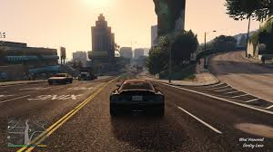
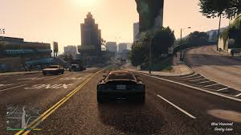

Our Review
Grand Theft Auto V has overwhelmingly positive reviews from users, praised for its expansive open world, gripping storyline, and attention to detail. Players appreciate its dynamic gameplay, character development, and satirical take on modern society. Many commend the immersive single-player experience and the endless possibilities in GTA Online
Story and Characters
Grand Theft Auto V follows three protagonists: Michael, a retired bank robber seeking excitement; Franklin, an ambitious street hustler aiming for a better life; and Trevor, a chaotic criminal driven by mayhem. Set in the sprawling state of San Andreas, their stories intertwine through high-stakes heists, betrayal, and survival in a corrupt world. The narrative explores themes of ambition, loyalty, and moral ambiguity, offering players a dynamic and immersive experience
Gameplay
The gameplay of Grand Theft Auto V offers a dynamic experience, blending story-driven missions with open-world freedom. Players switch between three protagonists, each with unique abilities, to complete heists, explore, and engage in various activities like driving, shooting, and flying. The detailed world, random events, and GTA Online's multiplayer modes provide endless replayability, making it a standout in action-adventure gaming
Graphics and Sound
The graphics of Grand Theft Auto V are highly detailed, featuring a stunning open world with realistic lighting, textures, and environments that bring the fictional state of San Andreas to life. From urban cityscapes to rural landscapes, the visuals are immersive and vibrant.The sound design complements the graphics with high-quality voice acting, an engaging soundtrack, and authentic environmental sounds. The in-game radio stations offer a variety of music genres, adding to the realism and atmosphere. Together, the graphics and sound create an immersive and cinematic experience.
Pros
- POV of three Different Characters with different Setups
- Vast and immersive open world
- Stunning graphics and sound
- Deep and rewarding gameplay
Cons
- Lack of Character Customization
- Long Load Times
- Lack of Realistic Consequences
Overall
Grand Theft Auto V offers a rich and immersive gaming experience, set in a sprawling open world filled with action, exploration, and diverse activities. The game combines intense missions, thrilling heists, and casual diversions, all within a highly detailed environment. Its stunning graphics, realistic sound design, and dynamic weather systems add depth to the world. GTA Online further extends the experience with multiplayer modes, offering endless opportunities for cooperation and competition. Despite some repetitive gameplay elements, the freedom, variety, and attention to detail provide a captivating and lasting experience

 
